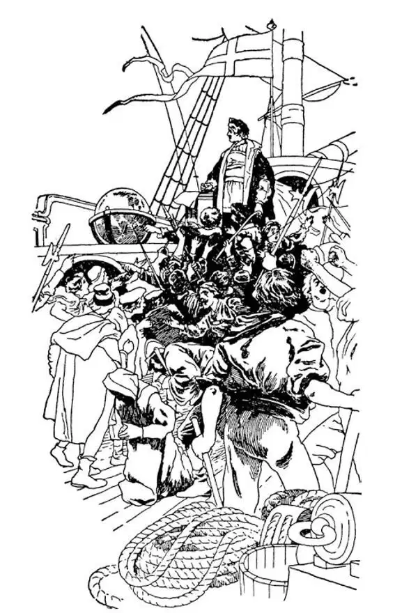

62
A Sailor Who Found a New World
一个发现“新”大陆的水手

WHAT book do you like best?
Alice in Wonderland?
Gulliver's Travels?
One of the first books to be printed and one that children at that time liked best was
The Travels of Marco Polo.
One of the boys who loved to read these stories of those far-away countries of Asia with their gold and precious jewels was an Italian named Christopher Columbus. Christopher Columbus was born in the city of Genoa, which is in the top of the boot . Like a great many other boys who were born in seaport towns, he had heard the sailors on the wharves tell yarns of their travels, and his greatest ambition in life was to go off to sea and visit all the wonderful lands of which he had read and been told. At last the chance came, and, though only fourteen years old, he made his first voyage. After that, Columbus made many other voyages and grew to be a middle-aged man, but he never got to the countries he had read about in The Travels of Marco Polo .
Many sea captains of that time were trying to find a shorter way to India than the long and tiresome one that Marco Polo had taken. They felt sure there was a shorter way by sea, and now that they had the compass to guide them, they dared to go far off searching for such a waterway.
By this time many books had already been printed. Some of these books on travel were written by the old Greeks and Romans. Some had been written by Arabs. The navigators knew that the world was round, even though some uneducated medieval folk believed it to be flat. Columbus had read these books and he said to himself that if the world is really round, one should be able to reach India by sailing toward the west. It should be much easier and shorter that way than if one took a boat to the end of the Mediterranean Sea and then went over land for thousands of miles the way Marco Polo had gone.
The more Columbus thought of the idea, the surer he was that this could be done and the more eager he was to get a ship to try out his idea. Of course, being only a sailor, he had no money to buy or hire a ship in which to make the trials and he could find no one to help him.
First Columbus went to the little country called Portugal. Portugal was right on the ocean's edge. It was to be expected then that the people of Portugal would be famous sailors, and they were —as famous as the Phoenicians had been of old. Columbus thought they might be interested and help. Besides, the king of Portugal was extremely interested in discovering new lands.
But the king of Portugal thought, as the others did, that Columbus was foolish and would have nothing to do with him. The king wanted to make quite sure, however, that there was nothing in Columbus's idea. Furthermore, if there were any new land, he wanted to be the first to discover it himself. So he secretly sent some of his sea captains off to explore. After a while they one and all returned and stated that they had been as far as it was safe to go, and that positively there was nothing at all to the west but water, water, water.
Columbus in disgust then went to the next country—Spain—which at that time was ruled by King Ferdinand and his Queen Isabella. King Ferdinand and Queen Isabella were just then too busy to listen to Columbus. They were fighting with the Muslims, who had been in Spain ever since 732, when, you remember, they got as far north as France. At last Ferdinand and Isabella succeeded in driving the Muslims out of their country, and then Queen Isabella became very much interested in Columbus's ideas and plans and finally promised to help him. She even said she would sell her jewels, if necessary, to give him the money to buy ships. So Columbus, with her help, was able to buy three little ships named the Niña , Pinta , and Santa Maria . So small were these three boats that nowadays we would be afraid to go even out of sight of shore in them.
At last everything was ready, and Columbus set sail from the Spanish seaport of Palos with about a hundred sailors. Directly toward the setting sun into the broad Atlantic, Columbus steered. Past the Canary Islands he sailed, on and on, day and night, always in the same direction.
See if you can get this idea—the idea that almost everyone had at that time except a few Scandinavians—that all there was of the world was what we have so far been studying about. Try to forget that you ever heard of North and South America. They, of course, knew of no such lands. Try to think of Columbus on deck scanning the waves in the daytime or peering off in the darkness at night, hoping sooner or later to sight, not a new land—he wasn't looking for a new land—but for China or India.
Columbus had been out for over a month, and his sailors began to get worried. It seemed impossible that any sea could be so vast, so endless, with nothing in sight before, behind, or on either side. They began to think about returning. They began to be afraid they would never reach home. They begged Columbus to turn back. They said it was crazy to go any farther; there was nothing but water ahead of them, and they could go on forever and ever, and there would never be anything else.
Columbus argued with them, but it was no use. Finally he promised to turn back if they did not reach something very soon. As the days went on still with nothing new, the sailors plotted to throw Columbus overboard at night and so get rid of him. They would then sail home and tell those back in Spain that Columbus had fallen overboard by accident.
At last, when all had given up hope except Columbus, a sailor saw a branch with berries on it floating in the water. Where could it have come from? Then birds were seen flying—birds that never get very far away from shore. Then one dark night, more than two months after they had set sail, they saw far off ahead a twinkling light. Probably no little light ever gave so much joy in the world. A light meant only one thing—human beings—and land, land—land at last! On the morning of October 12, 1492, the three boats ran ashore. Columbus leaped out, and falling on his knees, offered up a prayer of thanks to God. He then raised the Spanish flag, took possession of the land in the name of Spain, and called it San Salvador , which means in Spanish, Holy Saviour .

Columbus arguing with his crew（哥伦布与水手们在争论）
Now, Columbus thought this land was India or nearby islands called the Indies that he had at last reached, though of course we know now that two great continents, North and South America, blocked his way to India. In fact, he had only landed on a little island in the Bahamas off the coast of America.
Columbus and his sailors soon saw that people lived on this island. Columbus claimed the land for Spain. You may wonder how he thought he could do this when the land obviously already belonged to the people living there. One reason was that in those days, Europeans thought that if people were not Christians, then they had no rights. And so Columbus believed that he could simply take over their country and call it his own. Besides that, he hoped that someday the new land might make him rich.
Since Columbus thought that he had reached India, he called the people he found on the island Indians. We , of course, know that they were really Native Americans and not Indians. And we know that Native Americans had been living there for many centuries before Columbus even thought of sailing out into the Atlantic.
Columbus went on to other islands nearby; but he found very little gold and few precious stones such as he had expected, or the wonders that Marco Polo had described; and as he had been away so long, he started back again to Spain the way he had come. With him he took several Native Americans to show the people at home, and also some tobacco, which he found them smoking and which no one in Europe had even seen or heard of before.
When he at last reached home safely again, people were overjoyed at seeing him and hearing of his discoveries. Everyone was wildly excited—but only for a while. People soon began to say it was nothing for Columbus to have sailed westward until land was found, that anyone could do that.
One day when Columbus was dining with the king's nobles, who were trying to belittle what he had done, he took an egg and, passing it around the table, asked each one if he could stand it on end. No one could. When it came back to Columbus, he set it down just hard enough to crack the end slightly and flatten it. Of course, then it stood up. “You see,” said Columbus, “it's very easy if you only know how. So it's easy enough to sail west until you find land after I have done it once and shown you how.”
Columbus made three other voyages to America, four in all, but he never knew he had reached the Americas. Once he landed in South America, but he never reached the mainland of North America.
As Columbus did not bring back any of the precious jewels or wonderful things that those in Spain expected him to, people lost interest in him. Some were so spiteful and jealous of his success that they even charged him with wrongdoing, and King Ferdinand sent out a man to take his place. Columbus was put in chains and shipped home. Although he was promptly set free, Columbus kept the chains as a reminder of men's ingratitude and asked to have them buried with him. After this, Columbus made one other voyage, but when at last he died in Spain, he was alone and almost forgotten even by his friends. What an end for the man who had once been such a hero!
Of all the people of whom we have heard, whether kings or queens, princes or emperors, none can compare with Columbus. Alexander the Great, Julius Caesar, Charlemagne, were all killers. They took away. But Columbus gave . He gave us a new world. Without money or friends or luck, he stuck to his ideas through long years of discouragement. Although made fun of and called a crank and even treated as a criminal he never
【中文阅读】
你最喜欢哪本书？
是《爱丽丝漫游仙境》？
还是《格列佛游记》？
在印刷书刚开始出现的时候，其中有一本书是孩子们最喜欢的，这本书是
《马可·波罗游记》。
男孩子们都爱读这本书中那些遥远亚洲国家的故事，这些国家有金子和珍贵的珠宝，令人向往。有个意大利男孩，叫克里斯托弗·哥伦布，就特别爱读这本书。克里斯托弗·哥伦布出生在热那亚市，热那亚市在意大利“靴子”形版图的顶端。像许多出生在海港城市的男孩一样，他常听码头的水手讲述他们的旅行奇闻，所以他一生最大的志向就是出海去，到所有他读过的、听说过的奇妙的地方去看一看。机会 终于来了，他在14岁时，虽然年龄很小，就开始了人生第一次航海。在这以后，哥伦布多次出海航行，也渐渐成为一个中年人，但是他从未去过他在《马可·波罗游记》里读过的那些国家。
那时候许多航海船长都努力寻找去印度最近的路，以前马可·波罗走的那条路太长、太烦人。他们确信走海路行程会更近一些，既然有罗盘指路，他们就敢于驶向远方去寻找这样一条水路。
这时候已经印刷出大量书籍。其中有些书是古希腊人和古罗马人写的游记。有些游记是阿拉伯人写的。尽管一些无知的中世纪民众认为地球是平的，可是那些航海探险者知道地球是圆的。哥伦布读过这些书，他对自己说如果地球真是圆的，那么一直向西航行就能到达印度。这条路比乘船驶过地中海，再循着马可·波罗当年的路线长途跋涉几千里要容易得多、短得多。
哥伦布越想越认定这个想法可行，就更加急切地想弄条船来检验自己的想法。当然，他只是一名水手，既没钱买也没钱租一条船来进行尝试，他也找不到人帮助他。
哥伦布先去了一个叫葡萄牙的小国。葡萄牙正好在大洋边上，那么葡萄牙人应该是出色的水手，他们也确实如此——就和古代擅长航海的腓尼基人一样出色。哥伦布想也许他们会对自己的想法感兴趣并给予帮助。此外，葡萄牙国王对发现新陆地非常感兴趣。
但是，和别人一样，葡萄牙国王认为哥伦布是个傻瓜，不愿和他有任何关系。国王想完全确定，哥伦布的想法纯属子虚乌有。再者，如果真的有新陆地，他倒希望自己是第一个发现它的人。所以他秘密地派出他的一些船长出去探险。过了一段时间，他们一个个全回来了，并声称他们去了安全范围内最远的地方，西边确实什么都没有，除了水，水，还是水。
哥伦布在葡萄牙碰壁，感到厌恶，就去了另一个国家——西班牙——当时西班牙由国王斐迪南和王后伊莎贝拉统治。哥伦布去的时候，国王斐迪南和王后伊莎贝拉正忙得不可开交，根本没时间听哥伦布的想法。他们正在和穆斯林交战，还记得的吧，穆斯林自从公元732年就一直在西班牙，向北最远曾到达了法国。最后斐迪南和伊莎贝拉取得了胜利，把穆斯林赶出了西班牙。这时伊莎贝拉王后才开始对哥伦布的想法和计划产生了极大的兴趣，最后答应帮助他。她甚至说，如果必要的话，她会卖掉自己的珠宝，凑钱给他买船。于是在她的帮助下，哥伦布买了三艘小船，分别命名为“尼娜号”、“平塔号”和“圣马利亚号”。这三艘船太小了，换了今天我们都不敢乘着它们出海远航。
终于一切准备就绪，哥伦布带着大约一百名水手从西班牙帕洛斯海港起航了。哥伦布掌着舵，正对着落日的方向驶入辽阔的大西洋。航行经过了加那利群岛，然后日夜兼程，始终朝着同一个方向继续前进。
看看你是否有这样的看法——那时除了少数斯堪的纳维亚人，几乎所有人都有这个看法——那就是世界上的一切不会超出我们目前所知道的范围。想象一下你从未听说过南美洲和北美洲。他们当然从未听说过这些地方。想象一下哥伦布白天在 甲板上注视着茫茫海浪，晚上凝视着黑暗的夜空，希望迟早能看到，不是看到新大陆——他不是在寻找新大陆——而是看到中国或印度。
哥伦布在海上航行已经一个多月了，水手们开始着急了。似乎任何大海都不可能这么浩瀚，这么无边无际，前后左右除了海什么也看不到。他们开始想回去了。他们开始担心再也回不了家。他们请求哥伦布返航。他们说再往远处走就是疯了；前面除了海水什么也没有，即使能这样一直没完没了地走下去，结果还是一无所见。
哥伦布和他们争论，但是没有用。最后他答应如果再过几天还到达不了什么地方就返航。几天过去了，依然没有什么新发现，水手们密谋在夜里把哥伦布扔下海，就这样除掉他，然后打道回府，告诉西班牙人哥伦布因意外落水而亡。
最后，当所有人，除了哥伦布，都放弃希望的时候，一个水手看见海面上漂浮着一根树枝，树枝上还长着浆果。它能从哪里来呢？接着又看见鸟儿飞翔——鸟从来不会飞得离岸边太远。然后在一个漆黑的夜晚，在航行两个多月之后，他们看到前面远远的有火光闪烁。世界上也许再没有什么微弱的亮光能这样让人欣喜。火光只意味着一件事情——有人——还有陆地，陆地——终于看到陆地了。在1492年10月12日的早晨，三艘船冲到岸上。哥伦布一下子跳下船，跪倒在地，立即祈祷感谢上帝。然后他升起了西班牙国旗，以西班牙的名义占领这片土地，称它为“圣萨尔瓦多”，在西班牙语中意思是“神圣救世主”。
那时，哥伦布认为他最终到达的这块土地是印度或是附近称为印度群岛的岛屿，不过我们现在当然知道这两个大陆，南美洲和北美洲，挡住了他去印度的路。事实上，他只是在美洲海岸边的巴哈马群岛中的一个小岛登陆了。
哥伦布和水手们很快就看见了小岛上的居民。哥伦布声称这片土地归西班牙所有。你也许感到奇怪他凭什么认为他能这样做，这片土地显然已经属于那里的居民了啊。一个原因是，在那个时代，欧洲人认为不是基督徒的人是没有任何权利的。所以哥伦布认为他可以就这么轻易地接管他们的土地，宣布归他所有。除此之外，他还希望有一天这块新土地给他带来财富。
既然哥伦布认为自己已经到达了印度，他就把他在岛上看到的人称为印度人。我们当然知道他们其实是美洲土著人 ［1］ ，不是印度人。而且我们知道这些美洲土著人在哥伦布想到深入大西洋航行之前就已经在那里生活了好几百年了。
哥伦布又到了附近的其他岛屿，但是他没发现多少他期待的黄金和宝石，也没遇到马可·波罗描述过的奇观；既然他出来这么久了，他就开始按来时的路返回西班牙。他带了几个美洲土著人一起上路，准备给国内的人看一看，还带了一些土著人吸的烟草，这东西欧洲人别说见，听都没听说过呢。
当他终于安全回到家乡的时候，人们见他回来，又听他说了他的发现后欣喜若狂。人人都激动万分——不过这股兴奋劲很快就过去了。人们不久就开始议论哥伦布只不过向西航行直到发现陆地，这没什么大不了的，任何人都能做到。
一天，哥伦布和国王的贵族们在一起吃饭，他们开始议论纷纷，想贬低他的成 就。他拿起一个鸡蛋，让鸡蛋传给在座的每个人，问谁能把鸡蛋立在桌上。没有一个人能做到，当鸡蛋又回到哥伦布手里时，他轻轻把鸡蛋向下一敲，敲破了蛋壳的一端，这样那下面就变平了。于是，鸡蛋自然就立起来了。“你们看，”哥伦布说，“如果知道该怎么做，当然非常简单了。我先做过一次，让你们知道是怎么做的，所以你们会觉得向西航行直到找到陆地是很容易的。”
之后，哥伦布又三次航行到达美洲，这样一共是四次，但是他从来不知道他到的地方是美洲。有一次他在南美洲登陆，但是他从未到过北美洲大陆。
因为哥伦布没有带回西班牙人期待的珠宝或是什么奇妙的东西，人们对他失去了兴趣。有些人心怀恶意，嫉妒他的成就，甚至于指控他做了坏事，国王斐迪南派出一个人去代替他。哥伦布被带上镣铐用船运回家乡。尽管他很快就被释放了，但是哥伦布始终保留着那副镣铐让它提醒自己西班牙人的忘恩负义，还要求死后和它葬在一起。在这以后，哥伦布又远航过一次，但是当他最后死在西班牙的时候，孤身一人，甚至连朋友几乎都把他遗忘了。曾经的航海英雄，竟然落到如此下场！
在我们听到过的所有人当中，无论国王还是王后，王子还是皇帝，没有人能和哥伦布相比。亚历山大大帝、尤利乌斯·恺撒、查理曼，这些人杀人无数。他们掠夺成性。而哥伦布却是在“给予”。他给了我们一个新世界。他没有钱，没有朋友，没有运气，虽长年经受挫折打击，他却仍然坚持自己的理想。他尽管被人取笑，被称作怪人，甚至被当做罪犯对待，却从未